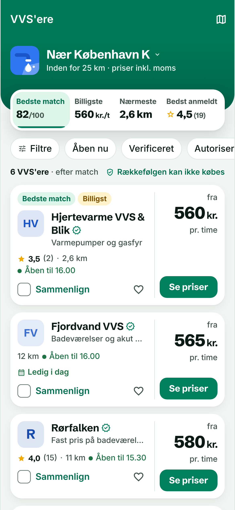

fixmatch.
Gratis iPhone-app
Hvad koster en VVS'er?
Se det,
før du
ringer.
9:41

Demo
Testversion med demo-firmaer
- Firmaernes egne priser
- Sammenlign op til tre på pris, afstand og anmeldelser fra brugere via FixMatch
- Tilbudstjek: Er dit tilbud lavt, normalt eller højt?
Scan og se,
hvordan den virker.

fixmatchh.netlify.app